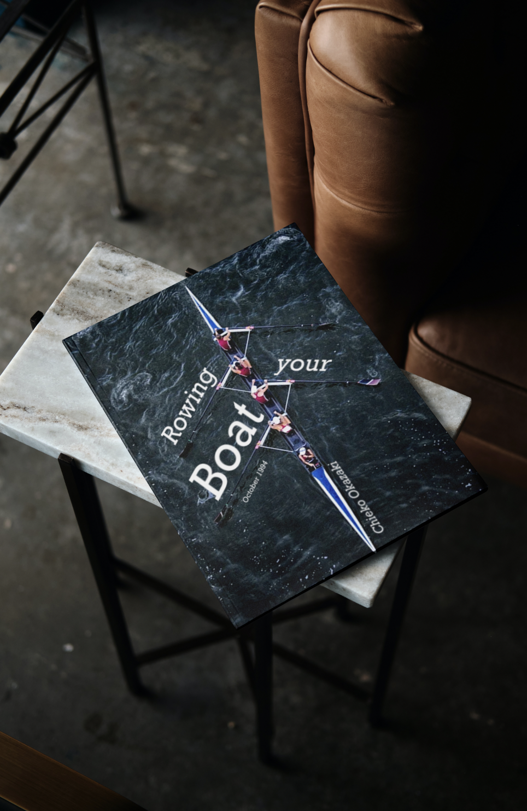
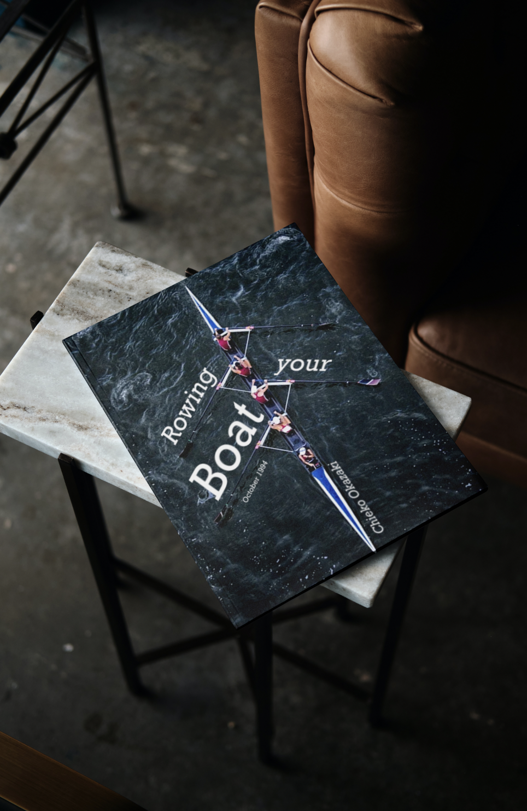

Overview
Purpose
My design portfolio is a space to showcase my work, creativity, and expertise in graphic design, branding, UI/UX, and digital illustration. It provides potential clients, employers, and creative collaborators with insight into my process, aesthetic, and problem-solving approach.
Audience
This portfolio is tailored for potential employers seeking talented designers, freelance clients in need of branding and digital content, and creative professionals looking for collaboration.
Branding
Website Logo
Style Guide
Color Palette
| Primary | Secondary | Accent 1 | Accent 2 |
|---|---|---|---|
| #1E1E1E (Dark Charcoal) | #9b39e6 (Purple) | #F1FAEE (Soft White) | #A8DADC (Teal) |
Typography
Heading Font: Poppins (Modern & Clean)
Paragraph Font: Lora (Elegant & Readable)
Navigation
Site Map
Content
Home
Welcome to my design portfolio! Here, you’ll find a collection of my latest creative projects, including branding, UI/UX design, and digital illustrations. I’m passionate about crafting visually compelling designs that communicate ideas effectively.
 

Portfolio
My portfolio showcases a diverse range of design projects, from corporate branding to digital art and web design. Each piece represents a unique challenge and an opportunity to solve problems visually.


About Me
I'm Kelsey Schaefermeyer, a passionate graphic designer with a love for visual storytelling. My journey into design started with a fascination for colors, typography, and digital media.


Contact
Let’s connect! Whether you're interested in a collaboration, freelance work, or just want to chat about design, feel free to reach out.

Why Visit My Site?
Showcasing My Design Work
Visitors will come to my site to view my design projects, ranging from branding and UI/UX to digital illustrations and visual storytelling.
Understanding My Design Approach
Potential clients and employers often seek insight into a designer’s thought process. My site provides detailed explanations of my workflow.
Finding Inspiration & Collaboration
Creative professionals, students, and aspiring designers may visit my site for inspiration or collaboration opportunities.
What Visitors Can Do
Browse My Portfolio
The primary action visitors will take on my site is viewing my portfolio, which is categorized into branding, UI/UX, and digital art.
Learn About My Background
The "About Me" page provides insight into my journey as a designer, my inspirations, and my creative philosophy.
Contact Me for Work & Collaborations
Clients, employers, and collaborators can easily reach out through my contact page, which includes an email contact form and social media links.
What Makes My Site Unique?
High-Quality, Well-Organized Design Showcase
Unlike generic design portfolios, my site is carefully curated with an intuitive layout.
Personalized Experience & Brand Identity
My portfolio reflects my unique design style, personality, and approach.
Strategic Focus on UI/UX & Branding
Many design portfolios focus solely on aesthetics, but I prioritize **user experience and storytelling**.
Wireframes